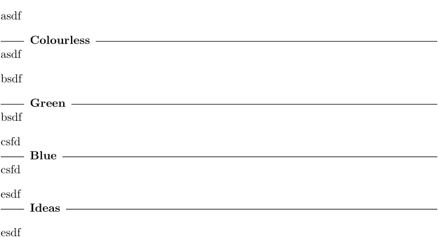

Contents
Summary
The command
\textrule
creates a line with rules around some text.
Settings
| \textrule[...]{...} | |
| [...] | top middle bottom |
| {...} | text |
| Option | Explanation |
|---|---|
| The argument designates the positioning of the bit of added vertical whitespace | |
Description
Place some text, with a rule to left and right of it.
Option "middle" is the option to use when it is place between a \textrule[top] and a \textrule[bottom].
Examples
Example 1
-
\setupwhitespace[big] asdf \textrule[top]{Colourless} asdf bsdf \textrule{Green} bsdf csfd \textrule[middle]{Blue} csfd esdf \textrule[bottom]{Ideas} esdf
- 